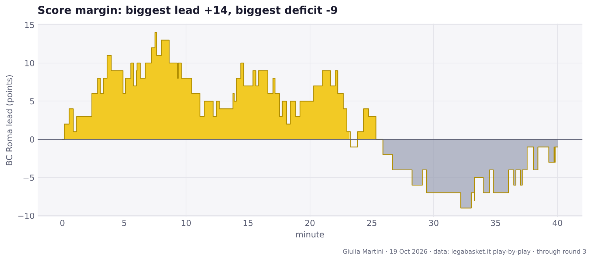
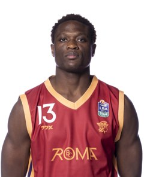
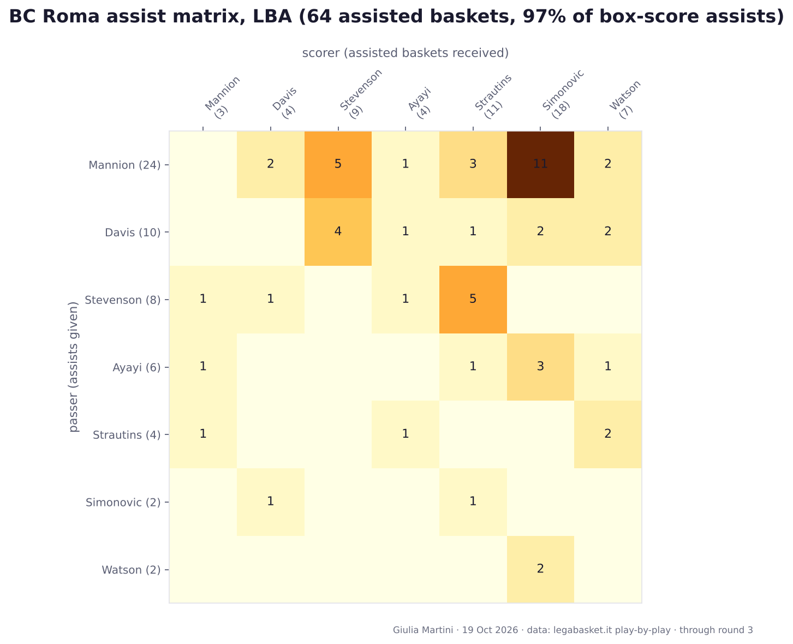
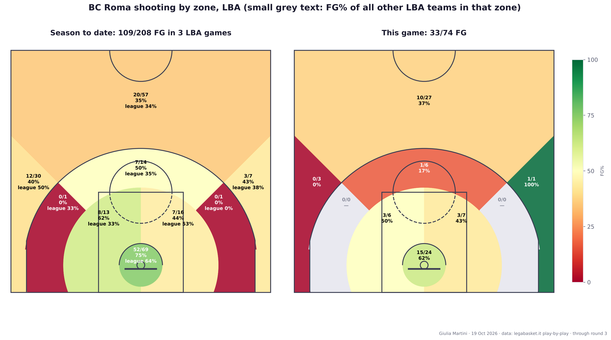
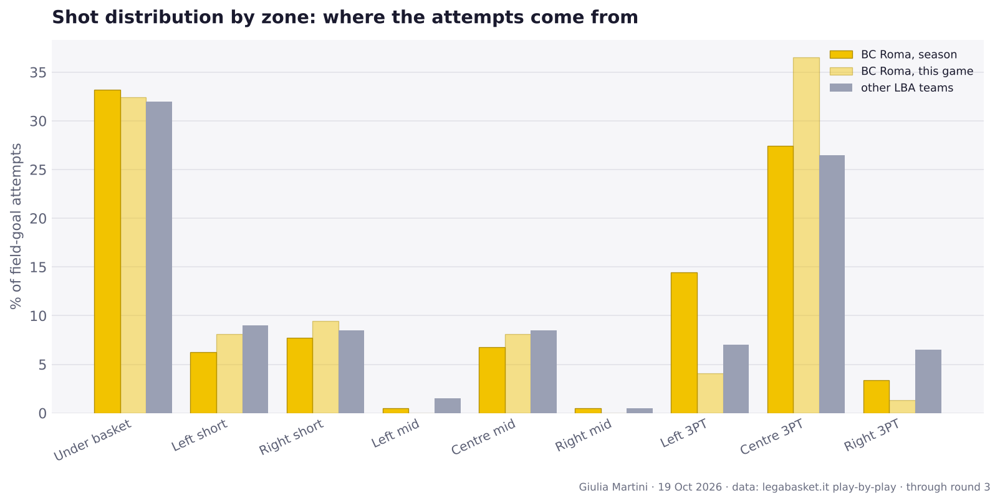
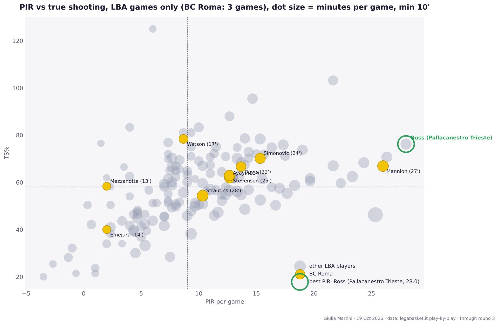
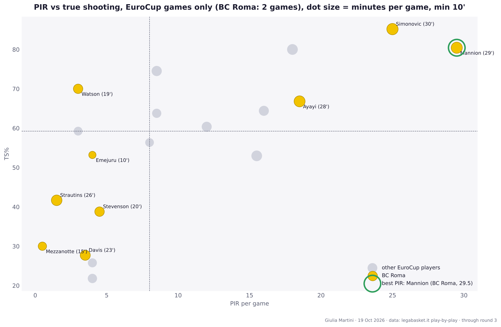
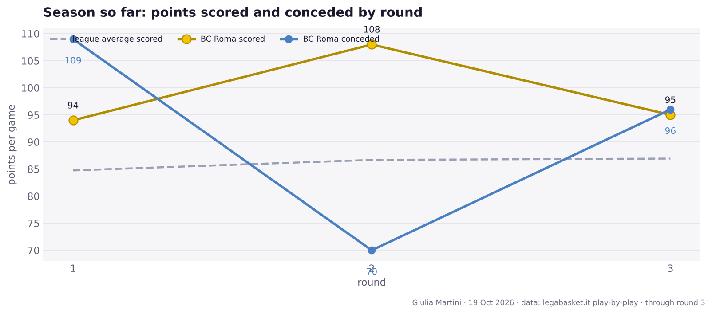

BC Roma lost to Maxima Roma, 95-96
Round 3 · Sunday 11 October 2026 · PalaEur, Roma · 9312 spectators
Record: 1-2 · 12th in the standings
A 95-96 defeat at PalaEur in the first Rome derby of the season.
Author: Giulia Martini
The game in numbers
| Q1 | Q2 | Q3 | Q4 | Final | |
|---|---|---|---|---|---|
| BC Roma | 33 | 24 | 13 | 25 | 95 |
| Maxima Roma | 25 | 27 | 25 | 19 | 96 |

Team numbers
| BC Roma | Maxima Roma | |
|---|---|---|
| Points | 95 | 96 |
| Possessions | 82.4 | 76.1 |
| Off. rating | 115.3 | 126.1 |
| eFG% | 51.4 | 59.0 |
| TOV% | 12.1 | 11.8 |
| OREB% | 25.6 | 27.0 |
| FT rate (FTA/FGA) | 25.7 | 34.3 |
| 3P | 10/29 | 15/29 |
| 2P | 23/45 | 17/38 |
| FT | 19/19 | 17/23 |
| Assists | 17 | 21 |
| Turnovers | 10 | 9 |
| Rebounds | 37 | 39 |
eFG% = (2P + 1.5 × 3P) / FGA · TOV% = turnovers per 100 possessions · OREB% = share of available offensive rebounds · FT rate = free throw attempts per field goal attempt.
Players

Playing time
No player had a significant increase in playing time (flag: at least 8' played and either +7' or +30% versus the average in earlier games).
Full box score, BC Roma
| Player | Min | Pts | 2P | 3P | FT | Reb | Ast | TOV | Stl | PIR | +/- | | --- | ---: | ---: | ---: | ---: | ---: | ---: | ---: | ---: | ---: | ---: | ---: | | **Strautins** | 30 | 14 | 3/5 | 2/5 | 2/2 | 5 | 0 | 0 | 0 | 13 | +6 | | **Mannion** | 29 | 24 | 4/5 | 2/7 | 10/10 | 2 | 10 | 4 | 1 | 31 | +2 | | **Stevenson** | 26 | 9 | 3/6 | 1/7 | 0/0 | 3 | 2 | 0 | 2 | 6 | +5 | | **Simonovic** | 25 | 9 | 3/4 | 1/3 | 0/0 | 4 | 1 | 3 | 1 | 5 | +4 | | Davis | 24 | 12 | 2/4 | 2/4 | 2/2 | 3 | 2 | 1 | 1 | 14 | +0 | | Watson | 18 | 10 | 2/3 | 2/2 | 0/0 | 2 | 1 | 1 | 0 | 9 | -15 | | Ayayi | 15 | 7 | 2/6 | 0/1 | 3/3 | 6 | 1 | 1 | 0 | 9 | -8 | | Emejuru | 14 | 4 | 2/7 | 0/0 | 0/0 | 7 | 0 | 0 | 0 | 3 | -5 | | **Mezzanotte** | 12 | 2 | 1/1 | 0/0 | 0/0 | 2 | 0 | 0 | 0 | 3 | +10 | | Flowers | 7 | 4 | 1/4 | 0/0 | 2/2 | 2 | 0 | 0 | 0 | 3 | -4 | Bold = starter.Full box score, Maxima Roma
| Player | Min | Pts | 2P | 3P | FT | Reb | Ast | TOV | Stl | PIR | +/- | | --- | ---: | ---: | ---: | ---: | ---: | ---: | ---: | ---: | ---: | ---: | ---: | | **Holiday** | 33 | 20 | 2/5 | 4/8 | 4/5 | 3 | 8 | 1 | 1 | 23 | -1 | | Alibegovic | 31 | 18 | 0/1 | 6/9 | 0/0 | 6 | 2 | 2 | 0 | 20 | +11 | | Moon | 27 | 9 | 2/3 | 1/3 | 2/2 | 5 | 7 | 0 | 0 | 16 | +18 | | **Brown** | 24 | 18 | 7/10 | 0/0 | 4/6 | 7 | 0 | 2 | 0 | 21 | +1 | | Tyson | 24 | 14 | 3/5 | 1/3 | 5/6 | 2 | 0 | 1 | 1 | 14 | +3 | | **Wheatle** | 17 | 3 | 0/2 | 1/2 | 0/0 | 2 | 1 | 0 | 0 | 2 | -6 | | **Bilan** | 15 | 9 | 3/10 | 1/1 | 0/2 | 4 | 2 | 2 | 0 | 6 | -3 | | Veronesi | 13 | 3 | 0/0 | 1/2 | 0/0 | 2 | 1 | 1 | 0 | 5 | -10 | | **Lemar** | 12 | 2 | 0/2 | 0/1 | 2/2 | 2 | 0 | 0 | 1 | 3 | -5 | | Camara | 3 | 0 | 0/0 | 0/0 | 0/0 | 0 | 0 | 0 | 0 | -1 | -3 | | Bonacini | 1 | 0 | 0/0 | 0/0 | 0/0 | 0 | 0 | 0 | 0 | 0 | +0 | Bold = starter.Roster
Per-game averages through round 3, LBA + EuroCup. Shooting: percentage (attempts per game).
| Player | Pos | Ht | GP | MIN | PTS | REB | AST | PIR | FG% (FGA) | 3P% (3PA) | FT% (FTA) | PPG LBA | PPG EC | |
|---|---|---|---|---|---|---|---|---|---|---|---|---|---|---|
| Mannion | – | – | 5 | 27.6 | 20.8 | 3.4 | 7.0 | 27.4 | 57 (12.0) | 34 (6.4) | 96 (5.2) | 18.0 | 25.0 | |
| Strautins | – | – | 5 | 27.0 | 10.8 | 4.2 | 1.6 | 6.8 | 40 (9.6) | 33 (4.8) | 57 (2.8) | 12.7 | 8.0 | |
| Simonovic | – | – | 5 | 26.4 | 15.4 | 7.0 | 1.0 | 19.2 | 70 (8.8) | 33 (1.8) | 80 (3.0) | 14.3 | 17.0 | |
| Ayayi | – | – | 5 | 24.7 | 11.0 | 5.2 | 3.2 | 15.0 | 53 (7.2) | 30 (2.0) | 88 (3.2) | 10.3 | 12.0 | |
| Stevenson | – | – | 5 | 23.2 | 10.4 | 3.0 | 2.0 | 9.4 | 41 (9.2) | 37 (6.0) | 75 (0.8) | 13.0 | 6.5 | |
| Davis | – | – | 5 | 22.1 | 8.2 | 2.0 | 3.4 | 9.6 | 43 (7.4) | 25 (3.2) | 100 (1.0) | 11.0 | 4.0 | |
| Watson | – | – | 5 | 18.2 | 10.0 | 2.2 | 1.0 | 6.4 | 62 (5.8) | 55 (4.0) | 33 (1.8) | 12.0 | 7.0 | |
| Mezzanotte | – | – | 5 | 13.9 | 2.0 | 1.6 | 0.0 | 1.4 | 36 (2.2) | 29 (1.4) | – (0.0) | 2.3 | 1.5 | |
| Emejuru | – | – | 5 | 12.3 | 2.8 | 3.6 | 0.0 | 2.8 | 38 (2.6) | – (0.0) | 67 (1.2) | 2.7 | 3.0 | |
| Flowers | – | – | 2 | 6.0 | 3.0 | 1.5 | 0.5 | 3.0 | 20 (2.5) | 0 (0.5) | 100 (2.0) | 3.0 | – | |
 |
Odzebe | – | – | 2 | 2.5 | 1.0 | 0.5 | 0.0 | 0.5 | 50 (1.0) | 0 (0.5) | – (0.0) | 0.0 | 2.0 |
| Iuzzolino | – | – | 3 | 1.7 | 0.7 | 0.0 | 0.0 | 0.3 | 100 (0.3) | – (0.0) | – (0.0) | 1.0 | 0.0 | |
| Tavernelli | – | – | 1 | 1.0 | 0.0 | 1.0 | 1.0 | 2.0 | – (0.0) | – (0.0) | – (0.0) | 0.0 | – |
Assists

Passer (rows) to scorer (columns), assisted baskets linked in the LBA play-by-play. Most frequent pairs: Mannion → Simonovic (11), Mannion → Stevenson (5), Stevenson → Strautins (5), Davis → Stevenson (4), Mannion → Strautins (3).
Shot zones


Efficiency: true shooting vs PIR
LBA games only

EuroCup games only

EuroCup: 2 games for BC Roma; the grey dots are the players of the other teams in the EuroCup box scores collected so far, so read it as a very small sample.
Round 3 across the league
- Udine 66-74 Trento
- Varese 85-84 Trieste
- Milano 106-77 Treviso
- Reggio Emilia 93-86 Tortona
- Cantù 80-99 Napoli
- Scafati 82-89 Verona
- Maxima Roma 96-95 BC Roma
- Venezia 86-93 Virtus Bologna

Standings table
| # | Team | Pts | W-L | Diff | Results | | ---: | --- | ---: | :---: | ---: | :---: | | 1 | Napoli | 6 | 3-0 | +44 | WWW | | 2 | Virtus Bologna | 6 | 3-0 | +37 | WWW | | 3 | Verona | 4 | 2-1 | +2 | LWW | | 4 | Milano | 4 | 2-1 | +30 | WLW | | 5 | Treviso | 4 | 2-1 | -11 | WWL | | 6 | Trento | 4 | 2-1 | +10 | WLW | | 7 | Venezia | 4 | 2-1 | +10 | WWL | | 8 | Varese | 4 | 2-1 | -12 | LWW | | 9 | Udine | 4 | 2-1 | +17 | WWL | | 10 | Reggio Emilia | 2 | 1-2 | -4 | LLW | | 11 | Maxima Roma | 2 | 1-2 | -27 | LLW | | 12 | **BC Roma** | 2 | 1-2 | +22 | LWL | | 13 | Tortona | 2 | 1-2 | -37 | WLL | | 14 | Trieste | 0 | 0-3 | -10 | LLL | | 15 | Cantù | 0 | 0-3 | -32 | LLL | | 16 | Scafati | 0 | 0-3 | -39 | LLL |Season so far

Next up
Round 4: Venezia (home), 2026-10-17 at 16:00.